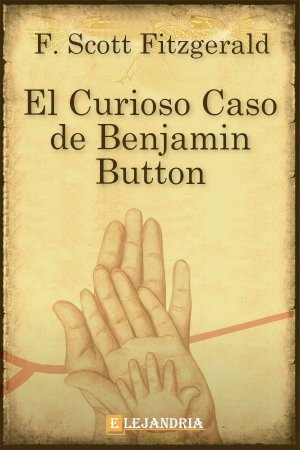

Nicholas Sparks
Benjamin Button nace como un anciano en el Nueva Orleans de 1918 y según pasa el tiempo va rejuveneciendo, justo al revés que el resto de los mortales.
Durante este proceso, el amor y la muerte formarán parte esencial de su vida.
Descargar